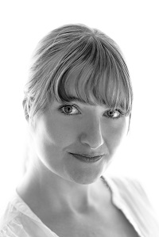

Susann Beier
Susann Beier is a passionate researcher, scientist and teacher with interest in science and engineering applied for human aid. Her mixed background in Materials and Biomedical Engineering enables unique insights into how we can learn from nature to advance technology. Susann works as a Research Fellow at the University of Auckland Medical School in New Zealand and assists with teaching at the Engineering School.